「大概吃得差不多吧……」
吃了多少、剩了多少，過兩三天就記不清楚。
給養貓的人
平常幾秒鐘記一筆，吃了多少、清砂看到什麼都留下來；每天陪牠玩一下，紀錄就自然累積起來。回診時，重點一頁帶著走。
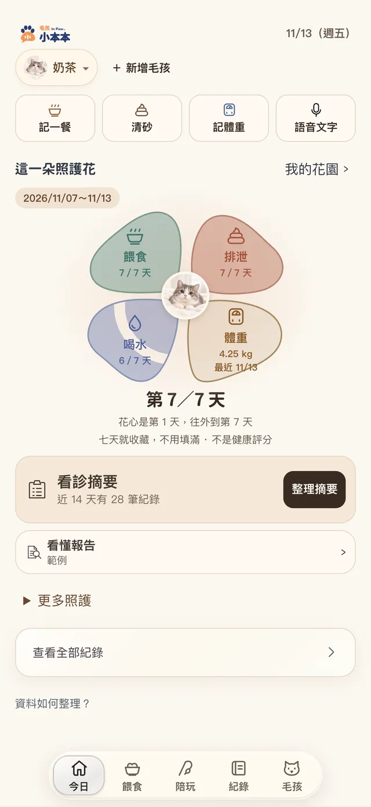
你每天都在照顧牠，可是要一下子說清楚，真的很難。
「大概吃得差不多吧……」
吃了多少、剩了多少，過兩三天就記不清楚。
「尿好像變少了？」
清砂時看到的變化，沒記下來就只剩印象。
「是哪一天開始的？」
相簿、聊天紀錄、自己的記憶，全都散在不同地方。
小本本幫你把日常記下來，看診時不用再靠回想。
首頁四顆按鈕：記一餐、清砂、記體重、語音文字。幾秒鐘就好。
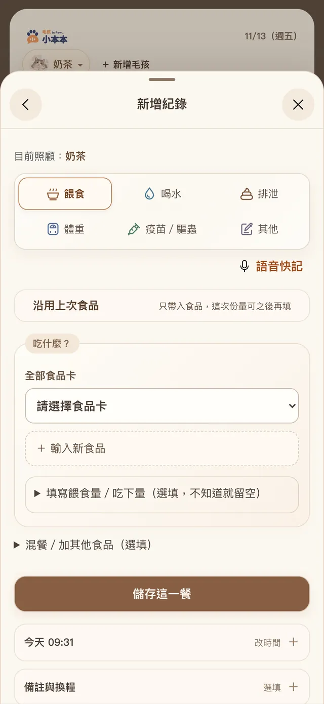
依日期排好，可以篩選餵食、排泄、體重，也能搜尋。
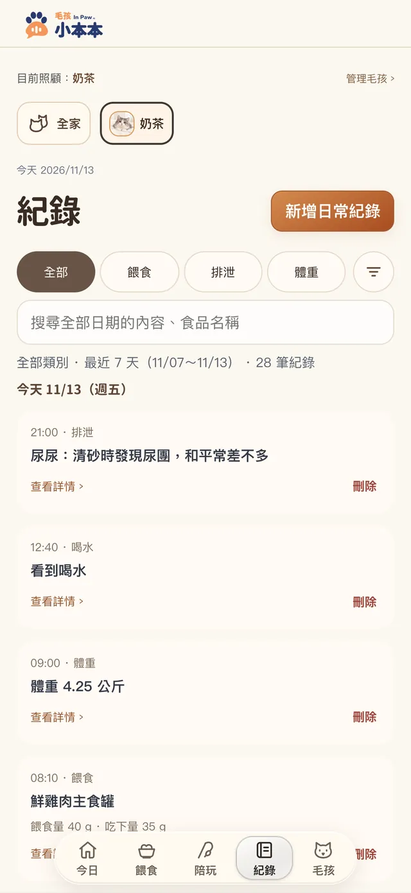
選 7 天或 14 天，整理成一頁：期間總覽、值得注意、記錄完整度。核對後可以列印，或直接傳給獸醫。
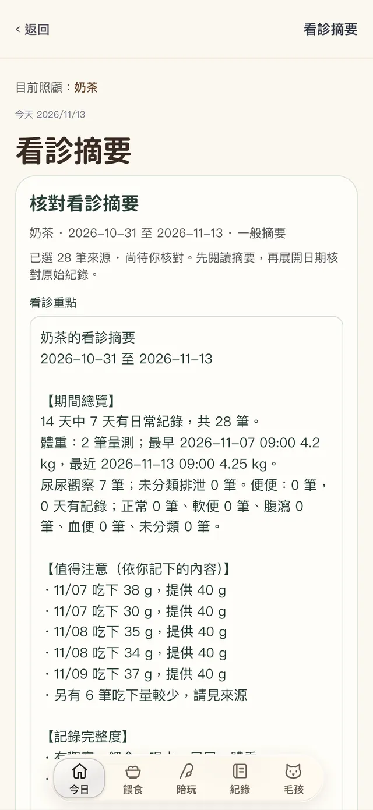
每天的陪伴
照顧不只是記錄。小本本也準備了陪牠玩的方式：不用打卡、沒有分數，玩一下就好。每天陪牠玩一下，紀錄就自然累積起來。
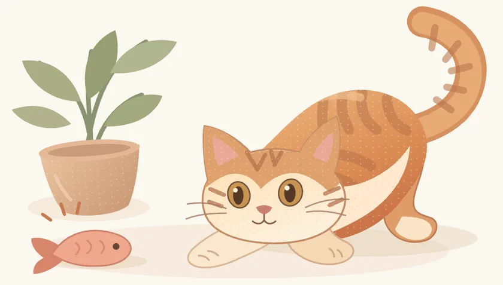
網站上的簡化版小魚。把手機平放在牠面前，按下開始，讓牠用爪子追。
App 裡的小魚遊戲更完整。
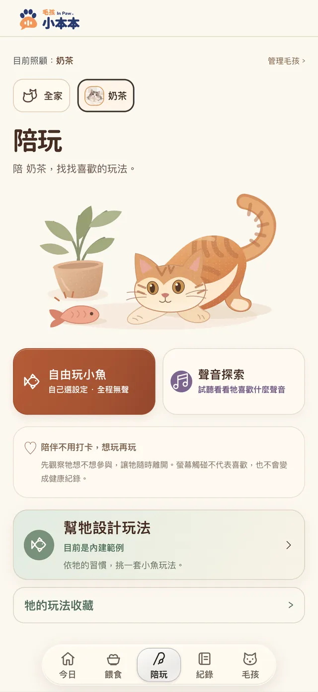
螢幕上的小魚游來游去，讓牠用爪子追，全程沒有聲音。陪玩頁還有「幫牠設計玩法」。
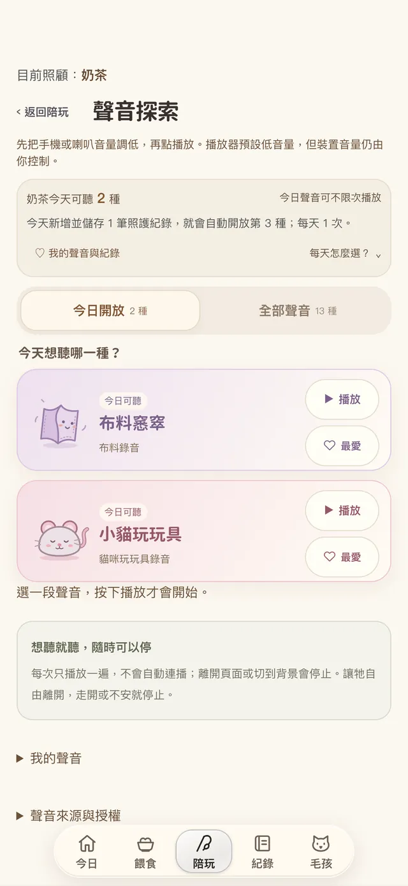
13 種聲音，每天兩段，看看牠對哪一種有興趣。按下播放才開始，不會自動連播；牠走開就停。
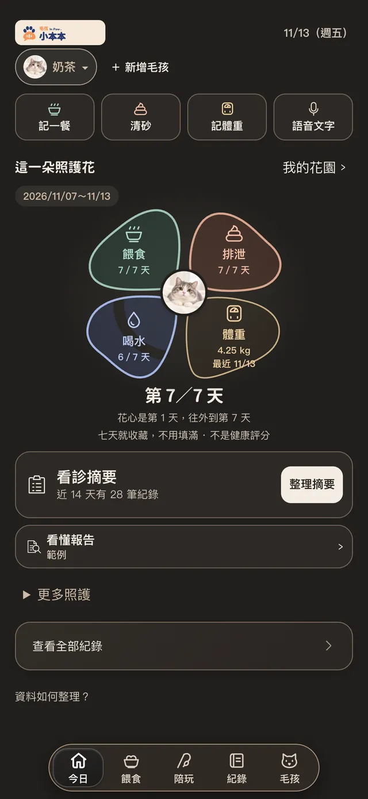
餵食、排泄、喝水、體重四片花瓣，記滿七天收成一朵，放進「我的花園」。不是健康評分，也不用填滿。
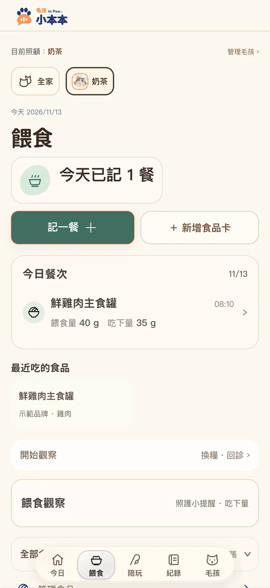
記下品牌、口味、營養標示。一餐可以放好幾種食品，分開記「餵了多少」和「吃了多少」。不知道就留空，不會把未知當成 0。
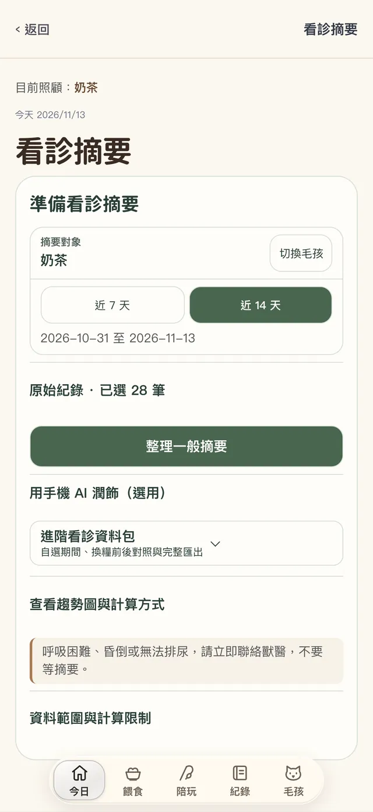
選期間，整理成期間總覽、值得注意、記錄完整度。可以修改，核對後保存，下載列印版、文字檔或直接複製。沒記錄的項目會明白列出來：未記錄不代表正常。
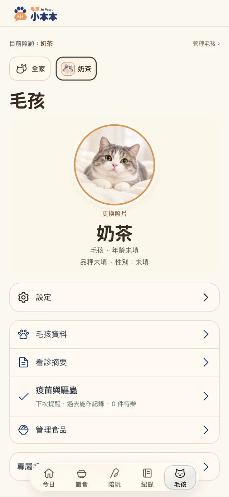
照片、疫苗與驅蟲提醒（日期由你填）、管理常吃的食品。
依日期列出所有紀錄，可以篩選，也能搜尋。
在手機上把說的話轉成文字草稿。模型約 240 MB，下載後可以離線使用；記憶體夠的手機，還能把口述整理成餵食草稿。結果都是草稿，核對後才存。
匯出備份檔，換手機時還原。
打開就能用，不用建帳號。
紀錄存在你的手機裡，不會自動上傳。
雲端整理是選用功能，目前只開放給內測受邀者；每次送出前都會先請你同意。
匯出備份檔，換手機時還原。家人同步與雲端備份目前還沒有開放。
價格與方案會在上架時公布。
目前 iOS 與 Android 都在測試中，上架時會在這裡公布。
存在你使用的這台手機裡，不會自動上傳。換手機時可以用備份檔還原。
可以。看診摘要可以下載列印版、文字檔，或直接複製傳給獸醫。摘要是整理你的紀錄，不是診斷。
聲音探索每天兩段，按下播放才開始，不會自動連播。播放前先把手機音量調低；牠走開或看起來不安，就停下來。小魚遊戲全程沒有聲音。
不用。語音快記是選用功能，不下載模型也能用按鈕或打字記錄。
目前只支援貓。